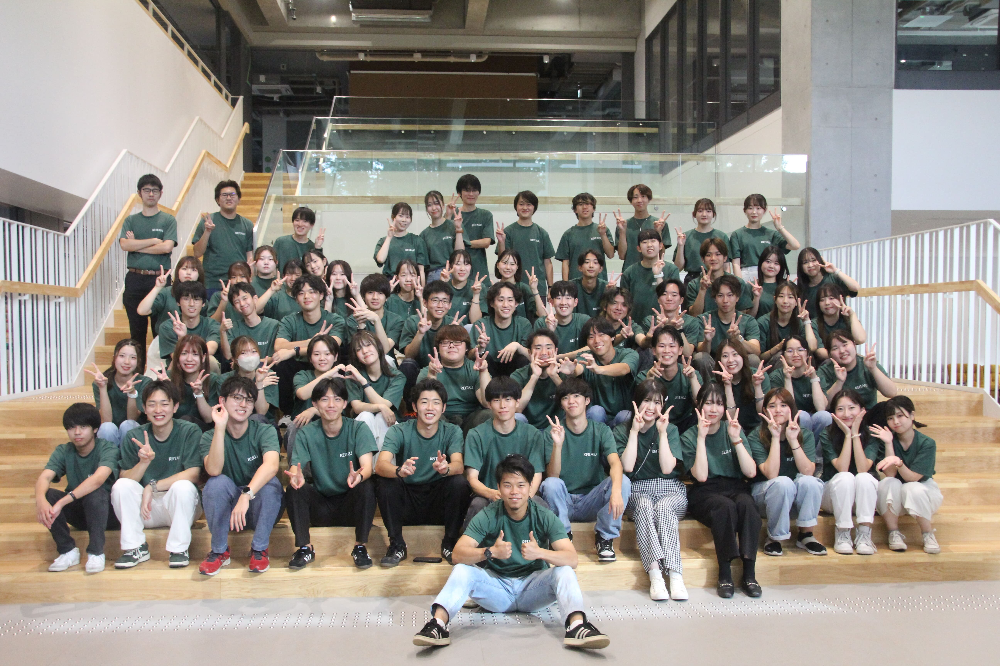
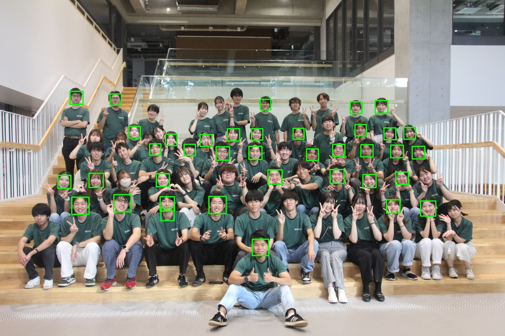

WEEK 11 · What did the detector miss?
何人、見つけられる？How many faces will it find?
画像を見て予想。次に検出結果と比べる。枠の数は、写っている人数そのものではない。Predict, then compare with the detector. A box count is not the number of people in the image.

WEEK 11 · What did the detector miss?
検出 ≠ 本人の認識Detection is not identification
顔検出は「顔らしい場所」を探す。この活動は名前・表情・出席を判断しない。Detection locates face-like regions. This activity does not identify names, expressions or attendance.
WEEK 11 · What did the detector miss?
モジュールを使うUse a module
import cv2はOpenCVを読み込む。画像を読む→グレーへ変換→検出→座標を返す。内部のモデルを一から作る授業ではない。import cv2 loads OpenCV. Read → grayscale → detect → return boxes. We use the detector, rather than train one.
WEEK 11 · What did the detector miss?
座標は、もう知っているデータBoxes are familiar data
1つの枠を辞書にすると、メニューと同じリストとして処理できる。ここは説明用の架空座標。Dictionary boxes can be processed like menu items. These are fictional teaching coordinates.
boxes = [{"x": 40, "y": 30, "w": 80, "h": 90},
{"x": 180, "y": 50, "w": 60, "h": 70}]
for box in boxes:
print(box["x"], box["y"], box["w"] * box["h"])40 30 7200 180 50 4200
WEEK 11 · What did the detector miss?
x・y・幅・高さx, y, width, height
xとyは左上、右端はx+w、下端はy+h。座標を変えて、枠がどちらへ動くか予想する。x/y mark the top-left; right is x+w and bottom is y+h. Predict how changing a coordinate moves the box.
Pythonの動きをJavaScriptで再現。自分のNotebookでも同じコードを実行する。JavaScript simulates the Python logic. Also run the code in your own notebook.
WEEK 11 · What did the detector miss?
同じforで、枠を描くDraw one rectangle per box
検出モデルの戻り値を受け取り、一つずつ長方形へ。検出のたびに画像全体をコピーし直さない。Take the detector output and draw one rectangle per box. Keep one image copy for all boxes.
for x, y, w, h in faces:
cv2.rectangle(image, (x, y),
(x + w, y + h), (0, 255, 0), 2)WEEK 11 · What did the detector miss?
インストールは、ここだけOne optional installation
追加パッケージはOpenCV 4。Notebookで %pip install "opencv-python<5"。配布スクリプトには同梱のHaarモデルを使い、別の重いモデルは不要。Use OpenCV 4: %pip install "opencv-python<5" in a notebook. The script uses its bundled Haar model, with no separate model download.
動かない人：検出済み座標CSVを読み、面積で絞り込み、結果を表示する。検出モデル自体を動かしたとは書かない。Fallback: read cached boxes, filter by area and print results. Label these as cached detections.
WEEK 11 · What did the detector miss?
実際の検出結果The actual detector output
この画像は同じ入力画像を配布スクリプトで処理したもの。件数と見た目を照合しよう。This image was produced by the supplied detector script. Compare its count with what you see.

WEEK 11 · What did the detector miss?
大きな枠だけ、残すKeep only larger boxes
同じ条件付きループ。min_areaという引数で、選択の基準を外から変える。The same conditional loop, with min_area as a parameter.
def large_boxes(boxes, min_area):
kept = []
for box in boxes:
if box["w"] * box["h"] >= min_area:
kept.append(box)
return kept
print(len(large_boxes(boxes, 5000)))1
WEEK 11 · What did the detector miss?
検出0件なら？What does zero prove?
「人がいない」と言える？Does zero detections prove nobody is there?
予想してから開くPredict, then reveal
言えない。顔の向き・大きさ・画像条件などで見落とす。入力画像も確認する。No. Pose, size and image conditions can cause misses; inspect the input too.
WEEK 11 · What did the detector miss?
30 MIN / CHALLENGE30 MIN / CHALLENGE
一つの変更を選び、元画像と結果を並べる。OpenCVなしでも、実際の座標CSVを条件で絞れる。Choose one change and compare input/output. Without OpenCV, filter the actual cached coordinate CSV.
WEEK 11 · What did the detector miss?
最終作品の計画を1ページにOne page for your project
画像、データ、道具、ゲーム。読み手と結果を一つに絞る。入力・必要ファイル・通常／境界／手計算の確認を記す。Choose a focused image, data, tool or game project. State audience, input, files, and normal/boundary/manual checks.